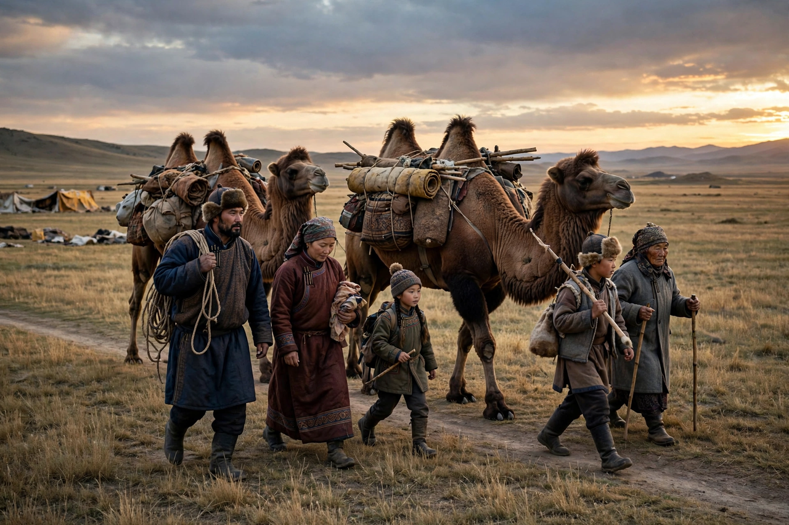

Nomad
From Wikipedia, the free encyclopedia

A nomad is a member of a community without fixed habitation that regularly moves from place to place, typically following seasonal patterns of pasture, game or trade. Nomadism — pastoral nomadism (Bedouin, Maasai, Mongolian herders), hunter-gatherer mobility, peripatetic trading and craft peoples (Romani, Irish Travellers) — was humanity's default for most of its existence and still involves an estimated 30–40 million people, now joined metaphorically by 'digital nomads'.
Pastoral nomadism
Steppe and desert herders move herds between pastures, living in portable dwellings (ger, black tent) and trading animal products for grain and goods with settled neighbours — a relationship of symbiosis and war (the steppe empires of Scythians, Turks and Mongols periodically reordered Eurasia). States have always found nomads illegible and taxable with difficulty; sedentarisation campaigns (Soviet collectivisation, which killed a third of Kazakhs in famine; Chinese and African enclosure policies) shrank the way of life through the twentieth century.
Modern echoes
Climate stress, borders and schooling continue the squeeze; some states (Mongolia) constitutionally accommodate mobility. The word's romantic afterlife — gap years, van life, remote work — both honours and trivialises the original discipline of living by movement.